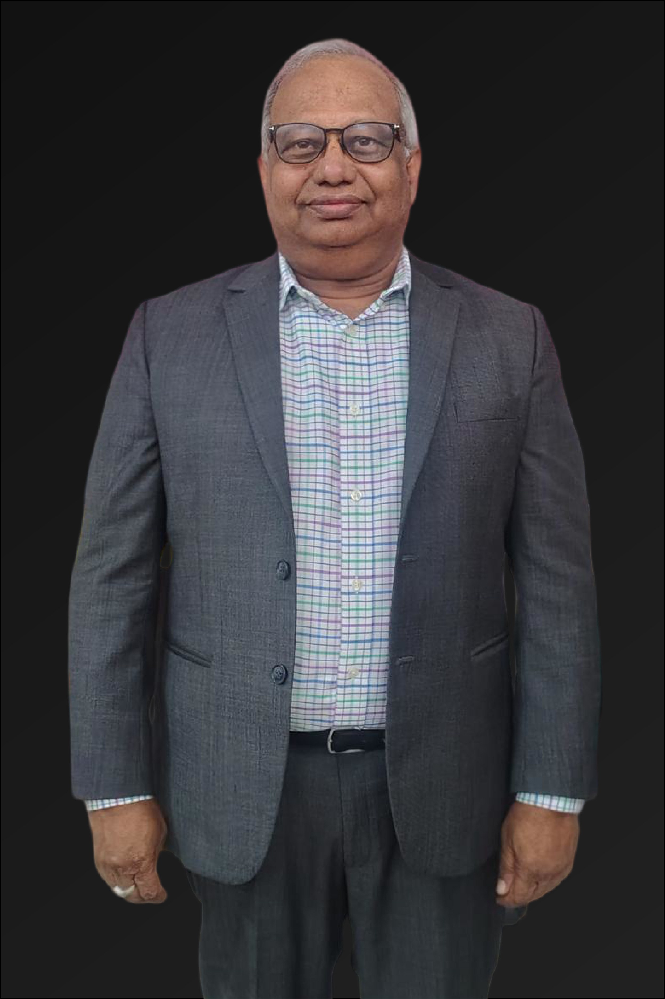

The Chairman
As the Chairman of NeuroPi, I bring over 45 years of diverse experience in serial entrepreneurship, technology innovation, and education. My career has spanned several industries, with a focus on pioneering groundbreaking technologies and creating scalable business models that transform lives. From founding and scaling successful ventures to driving technology adoption in education and business transformation, my journey has been defined by a relentless commitment to innovation and human potential.
With a deep-rooted passion for empowering individuals through cutting-edge solutions, I am proud to lead NeuroPi — an organization that integrates neuroscience, genetics, and AI to revolutionize human performance across education, wellness, sports, and defense. At NeuroPi, I am focused on ensuring that we remain at the forefront of technological advancements while staying true to our mission: to optimize human potential in every field and at every stage of life.
Serial Entrepreneurship & Business Leadership: I have founded and successfully scaled several technology-driven ventures, ranging from startups to large enterprises. This entrepreneurial journey has given me invaluable insights into business development, scalability, and market positioning. At NeuroPi, I leverage this experience to guide the company’s strategic direction, ensuring sustainable growth and impactful innovation.
Technology Innovation & Integration: My career has been dedicated to technology innovation, focusing on AI, big data, and personalized solutions. My contribution to Indian IT sector as Chairman of ESC (Electronic & Software Promotion Council — sponsored by Ministry of Commerce & Industry, Govt. of India) is truly remarkable. My tenure saw the growth of ESC from a few billion USD to 140 billion USD. I have been playing a major role in organising India Soft every year by bringing 600 foreign delegates from 60 countries to meet 300 SME IT Companies in India. I led ESC delegations to several countries. My leadership and motivation led 100+ IT companies to join synergies with ESC and APEDB to create IT Parks in Andhra Pradesh. I have also been a Member of Consultative Committee on IT Industry, Govt. of Andhra Pradesh (2014–19). As Ex-Chairman of IT & Electronics Task Force, Andhra Pradesh Economic Development Board, I have been part of various initiatives that harness the power of emerging technologies to create transformative products that empower users. At NeuroPi, I am committed to ensuring that we continue to lead in neurogenomic AI platforms that optimize human performance.
Education & Human Development: My deep passion for education has led me to contribute to numerous initiatives aimed at transforming learning through Technology I’ve been involved in launching several edtech ventures that leverage AI and data analytics to create personalized learning experiences — a focus that aligns with NeuroPi’s mission to enhance cognitive and emotional performance at scale. I am also the Founder Vice Chairman of Telugu Times Media Inc., USA and Patasala Inc., USA.
Mentorship & Thought Leadership: Over the years, I have mentored countless entrepreneurs, executives, and teams, sharing insights on scaling businesses, innovation, and technology integration. As a former advisor to AP JANMABHOOMI, Govt. of Andhra Pradesh, India, I took great pride in developing leaders who have been shaping the future of technology and human performance — much like we aim to do at NeuroPi.
Throughout my career, I have been recognized for my contributions to entrepreneurship, technology, and education, including: